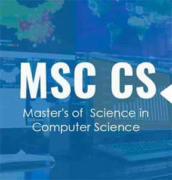

M.Sc. in Computer Science is a two-year post-graduate programme with the objective to develop human resources with core competence in various thrust areas of Computer Science. The programme includes software engineering, system development, natural computation, mathematical foundations and artificial intelligence.
Other modules include programming, data analytics, software development, applied communications, network architecture, and database design. The coursework of the programme focus on preparing students for innovation within major tech companies or entrepreneurship within startup ventures.
Students are provided with opportunities to develop and hone core competency in the field of computer science and encourage them to make a mark in the much sought after IT industry. Guest lectures, case studies and presentations are organised from time to time to give an insight into the latest development and happenings in the industry.
These degrees allow students to increase their knowledge and understanding of computers and their systems, to prepare them for advanced positions in the workforce. Many programs are module based, and students engage in intensive training through lectures, supervised research, and small peer-led training. Coursework often includes software engineering, system development, natural computation, mathematical foundations, and artificial intelligence.
Typical programs require students to have earned a bachelor’s degree in computer science, and can be completed in one to three years, depending on full, half, or partial enrollment capabilities. Students who successfully complete an advanced computer science program often have an increased ability to think critically, rapidly and efficiently solve problems, and develop software.
MSc Computer Science graduates have plenty of options to choose from in terms of their careers. There are various MSc Computer Science jobs available for these graduates and some of those include Website Developer, App Developer, Technical Assistant, Lab Assistants, iOS Developer, system administrator, software programmer, DataBase Manager, etc.
With an average MSc Computer Science salary ranging from INR 5 to 12 LPA, some of the companies which recruit MSc Computer Science graduates are :
• Bharat Sanchar Nigam Limited • Dell • Intel • HCl • Accenture • Oracle • Wipro Apart from making a career in the above-mentioned sectors, students can pursue higher education in the same field. Two of the most chosen courses after MSc Computer Science are M.Phil and Ph.D. in Computer Science • M.Phil in Computer Science: M.Phil Computer Science is a 1-year post-graduate program, which is aimed at developing skilled professionals and contributing to the IT sector. The basic eligibility of the course is a postgraduate degree in Computer Science from a recognized university. • Ph.D. in Computer Science: Ph.D. in Computer Science is a 3 to 5 years long doctorate level degree in the area of computer science and the minimum eligibility criterion for admission is 55% marks in M.Phil or any other equivalent level subject.